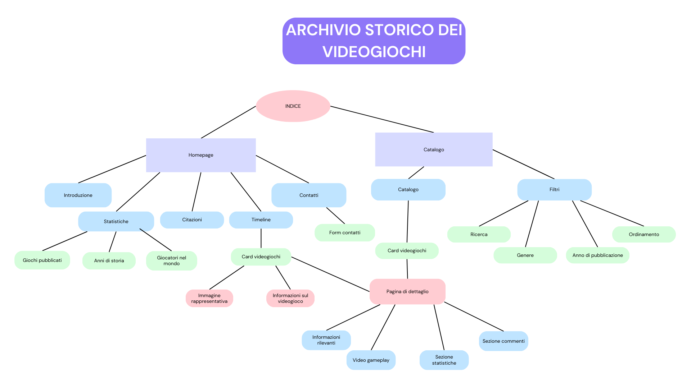
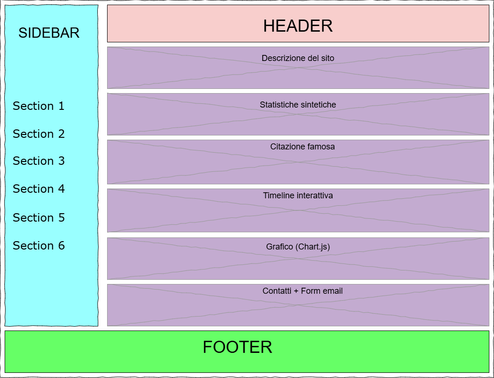
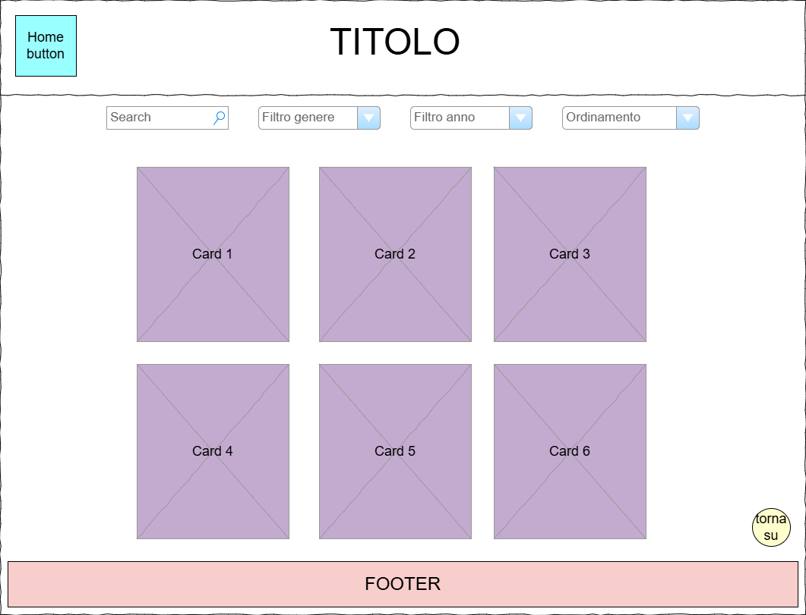
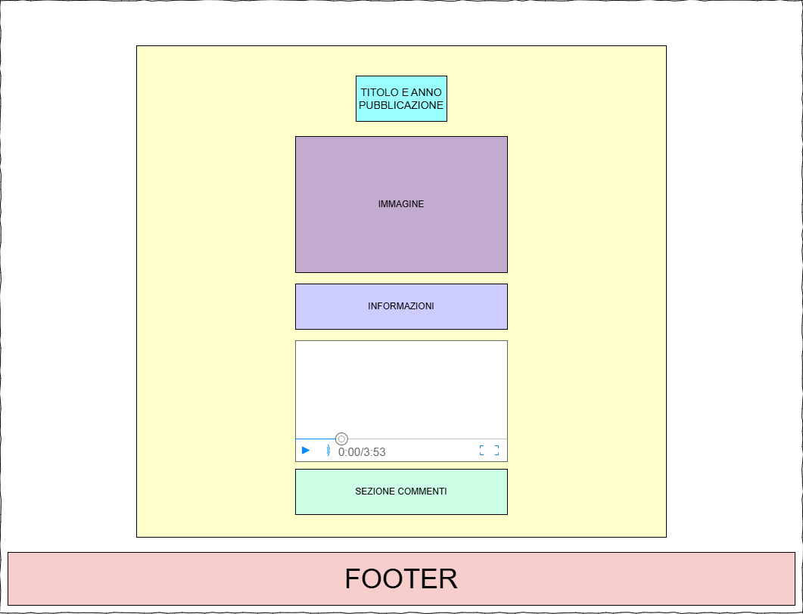

Idea
L'idea è realizzare un archivio storico digitale dei videogiochi più iconici che hanno segnato l'evoluzione del medium videoludico dagli anni '70 ai giorni nostri. Il progetto intende presentare in maniera interattiva e accessibile informazioni dettagliate sui giochi, arricchite da risorse multimediali, sistemi di browsing avanzati e funzionalità di interazione utente.
- Una homepage con presentazione e timeline interattiva.
- Un catalogo con filtri per genere, anno e titolo.
- Pagine di dettaglio per ogni videogioco, arricchite da meta tag Dublin Core e funzionalità di commento.
- Tool integrativi come grafici (es. Chart.js) per visualizzare statistiche storiche.
Il progetto integra contenuti multimediali (immagini, video e testi), una solida struttura di navigazione e strumenti interattivi, per garantire un’esperienza utente coinvolgente e informativa.
Brief
Finalità
Documentare in maniera interattiva e visuale l’evoluzione della storia dei videogiochi. Offrire un punto di riferimento sia per appassionati che per studiosi del settore. Valorizzare i dati storici con strumenti di visualizzazione come grafici e timeline.
Pubblico
Il sito si rivolge a diversi tipi di pubblico:
- Appassionati di videogiochi, collezionisti e storici del settore.
- Studenti e ricercatori interessati alla storia della tecnologia e del gaming.
- Pubblico generale curioso di scoprire l’evoluzione dell’intrattenimento digitale.
Accesso
Il sito è sviluppato con HTML5, CSS3 e JavaScript, ed è dotato di design responsive grazie all’uso di Bootstrap. L’accesso ai contenuti è facilitato da una sidebar di navigazione, filtri di ricerca e una timeline interattiva.
Contenuti e Dati
I contenuti sono raccolti da fonti storiche, archivi online e database di videogiochi. Il sito include immagini, video, descrizioni e metainformazioni basate sullo standard Dublin Core. I contenuti sono aggiornati periodicamente, con l’inserimento di nuovi titoli e approfondimenti. Le immagini e i video sono principalmente reperiti da YouTube e Pinterest.
Benchmark
Per realizzare un archivio storico di videogiochi efficace e completo, è stata svolta un'analisi accurata di due importanti competitors del settore:
1. MobyGames
Archivio storico e database dettagliato che raccoglie migliaia di titoli, coprendo diverse piattaforme e periodi storici. Il sito presenta un’interfaccia chiara e ordinata, facilitando la ricerca e la fruizione dei contenuti tramite sezioni ben definite e l'uso di filtri avanzati.
Punti di forza:- Ampiezza della collezione e dettaglio delle informazioni tecniche.
- Sistema di categorizzazione preciso e navigazione user-friendly.
- Implementazione di un sistema efficace di filtri per anno, genere e popolarità.
- Struttura ordinata e facilmente navigabile per migliorare l’usabilità del catalogo.
2. Giant Bomb
Sito con forte orientamento alla community, che valorizza l’interazione degli utenti tramite recensioni, commenti e contenuti multimediali come video e podcast.
Punti di forza:- Forte componente interattiva e multimediale.
- Coinvolgimento attivo della community attraverso commenti e discussioni.
- Introduzione di sezioni interattive, in particolare un sistema di commenti.
- Integrazione di video gameplay da YouTube nelle pagine di dettaglio.
Motivazione del nuovo sito
Nonostante l’esistenza di piattaforme consolidate, il progetto Archivio Storico dei Videogiochi nasce con l’intento di colmare alcune lacune e rispondere a esigenze specifiche non sempre soddisfatte dai competitor.
🖥️ Design moderno e responsive
Il sito adotta tecnologie moderne come HTML5, CSS3 e Bootstrap per garantire piena compatibilità con dispositivi desktop, tablet e mobile. L’esperienza utente è progettata per essere coerente, fluida e accessibile su qualsiasi schermo.
🧠 Interattività avanzata
Sono utilizzati strumenti dinamici come timeline interattive e grafici con Chart.js per visualizzare l’evoluzione storica dei videogiochi in maniera coinvolgente e immediata.
📚 Metadatazione avanzata
Ogni pagina di dettaglio dei videogiochi include meta tag Dublin Core, garantendo interoperabilità, indicizzazione efficace e compatibilità con sistemi di catalogazione digitale.
In sintesi, il sito si distingue dai concorrenti grazie a un approccio progettuale moderno, interattivo e conforme agli standard avanzati del web semantico, offrendo un’esperienza unica e ricca di contenuti.
Struttura
Mappa concettuale
La mappa concettuale rappresenta l’architettura informativa del progetto, evidenziando le sezioni principali del sito, i collegamenti tra homepage, catalogo, pagine di dettaglio e contenuti dinamici. Aiuta a formalizzare la logica di navigazione e a rendere chiaro il percorso dell’utente.
Schema del progetto
La struttura dei file del progetto è modulare e ordinata per garantire una facile manutenzione. Le risorse sono suddivise in cartelle dedicate per HTML, CSS, JS e immagini, secondo la seguente organizzazione:
archivio-storico-videogiochi/
│
├── index.html (homepage)
├── catalogo.html (pagina catalogo)
├── dettaglio.html (pagina dinamica dei videogiochi)
├── pong.html (pagina statica per Pong)
├── mario.html (pagina statica per Super Mario Bros)
│
├── assets/
│ ├── css/
│ │ ├── styles.css
│ │ ├── stylesCatalogo.css
│ │ └── game-details.css
│ ├── js/
│ │ ├── script.js
│ │ ├── catalogo.js
│ │ ├── dettaglio.js
│ │ └── comments.js
│ └── img/
│ ├── pong.jpg
│ ├── mario.jpg
│ └── [altre immagini]
Categorie descrittive dei videogiochi
Ogni videogioco è descritto attraverso una serie di categorie pensate per facilitare la ricerca, la classificazione e l’interoperabilità con altri archivi digitali. I metadati seguono lo standard Dublin Core.
Categorie principali
| Categoria | Descrizione |
|---|---|
| Titolo | Nome ufficiale del videogioco |
| Creatore | Sviluppatore del gioco |
| Editore | Casa editrice che lo ha pubblicato |
| Anno di pubblicazione | Data di uscita |
| Genere | Categoria (es. Arcade, RPG, Puzzle) |
| Descrizione | Informazioni narrative e tecniche |
| Lingua | Lingua del contenuto |
| Tipo | Classificazione come videogioco |
| Immagine | Copertina del gioco |
| Video gameplay | Video dimostrativo embedded |
| Valutazione | Punteggio medio |
| Popolarità | Indice di gradimento |
| Copie vendute | Volume di diffusione |
| Commenti | Feedback degli utenti |
| Reazioni | Emoji lasciate ai commenti |
Mappatura con Dublin Core
| Dublin Core | Categoria corrispondente |
|---|---|
| dc:title | Titolo |
| dc:creator | Creatore |
| dc:publisher | Editore |
| dc:date | Anno di pubblicazione |
| dc:subject | Genere |
| dc:description | Descrizione |
| dc:language | Lingua |
| dc:format | Formato |
| dc:type | Tipo |
Layout
Architettura logica
Il sito segue una struttura gerarchica e modulare. La homepage rappresenta il punto di ingresso principale e da essa l’utente può navigare verso il catalogo, le pagine di dettaglio, la timeline interattiva e le statistiche.
Ogni pagina è progettata per garantire coerenza visiva, accessibilità e facilità di navigazione, grazie a sidebar fisse, link ben strutturati e layout responsive.
Wireframes delle pagine principali
Homepage (index.html)
La homepage presenta la descrizione del progetto, la timeline storica, statistiche, una citazione famosa e la sezione contatti. Tutto è organizzato in blocchi ben distinti.
Catalogo (catalogo.html)
Il catalogo mostra una griglia di videogiochi filtrabile per genere, anno e titolo. Le card sono responsive e presentano titolo, immagine e link alla pagina di dettaglio.
Pagina di dettaglio (dettaglio.html)
Ogni pagina di dettaglio fornisce informazioni approfondite sul videogioco selezionato: titolo, copertina, descrizione, metadati Dublin Core, embed video di gameplay, statistiche e commenti dinamici.
Conclusione
Il layout è progettato per offrire un'esperienza utente coerente, moderna e intuitiva. I wireframe hanno guidato la realizzazione delle pagine, assicurando che ogni componente fosse ben posizionato, accessibile e funzionale in ottica responsive.
Accessibilità e Usabilità
Accessibilità
Il progetto è sviluppato seguendo buone pratiche di accessibilità web per garantire la fruizione del contenuto anche a utenti con esigenze particolari. Sono state adottate le seguenti strategie:
- Struttura HTML semantica e ben marcata.
- Sidebar di navigazione sempre visibile con evidenziazione della sezione attiva.
- Contrasto elevato tra testo e sfondo per migliorare la leggibilità.
- Testi ben spaziati e dimensioni leggibili anche su dispositivi mobili.
- Elementi interattivi con aree cliccabili estese e chiare.
Usabilità
Il sito è progettato per offrire un’esperienza utente semplice, ordinata e fluida:
- Layout pulito e box ben separati visivamente.
- Font coerente e moderno (Poppins) per una buona leggibilità.
- Navigazione fluida con link chiari e pulsanti visibili.
- Effetti visivi (hover, scaling) su elementi cliccabili per migliorare il feedback visivo.
Layout Responsive
Il sito è progettato per adattarsi dinamicamente a diverse risoluzioni:
- Sidebar visibile su desktop, adattata su mobile.
- Struttura dei contenuti che si ridistribuisce su una colonna singola in schermi piccoli.
- Griglia flessibile nel catalogo: le card passano da più colonne a una sola su mobile.
- Bottoni e testi scalabili per una buona esperienza touch.
Tabella di confronto
| Caratteristica | Accessibilità | Usabilità |
|---|---|---|
| Obiettivo | Contenuti leggibili e chiari | Esperienza utente fluida e intuitiva |
| Struttura | Box e sezioni ben definiti | Layout ordinato e coerente |
| Interazione | Bottoni e link ben visibili | Hover e scaling per il feedback visivo |
| Esperienza utente | Contrasto elevato e font leggibile | Navigazione semplice e coerente |
Servizi (Funzionalità dinamiche)
1. Elementi Dinamici
Il sito integra diverse funzionalità dinamiche realizzate in JavaScript, con aggiornamenti in tempo reale e interfacce fluide che migliorano l’interazione dell’utente.
- Filtri nel catalogo: selezione per genere, anno e popolarità.
- Ordinamento dinamico: alfabetico o per anno di pubblicazione.
- Commenti interattivi: gli utenti possono scrivere e reagire con emoji.
- Timeline scorrevole: evidenziazione degli eventi storici nel tempo.
- Grafici con Chart.js: statistiche aggiornate dinamicamente.
- Bottone "Torna su": per migliorare la navigazione lunga.
- Hover e transizioni CSS: rendono l’esperienza visiva più chiara e moderna.
2. Interattività del Catalogo
La pagina catalogo.html è uno dei cuori dinamici del sito. Utilizzando catalogo.js, consente:
- Ricerca istantanea per titolo.
- Filtri combinati per genere, anno e popolarità.
- Ordinamento in tempo reale dei risultati.
- Card responsive con link diretto alla pagina statica o dinamica di dettaglio.
3. Sistema di Commenti e Reazioni
Ogni videogioco ha una sezione commenti dinamica gestita da comments.js. Gli utenti possono:
- Scrivere un commento (senza ricaricare la pagina).
- Lasciare reazioni con emoji (👍 ❤️ 😂), aggiornate in tempo reale.
- I dati sono memorizzati con
localStoragelato client.
4. Timeline e Grafici Interattivi
📅 Timeline Interattiva
La homepage presenta una timeline scorrevole che mostra i principali videogiochi per anno. I dati sono caricati da script.js, e la navigazione è fluida con pulsanti avanti/indietro.
📊 Grafico "Giochi per anno"
Nella sezione statistiche della homepage, viene mostrato un grafico interattivo realizzato con Chart.js che visualizza il numero di videogiochi pubblicati per anno.
- Interazione mouse-over con tooltip informativi.
- Aggiornamento dinamico da dati JavaScript.
5. Possibili sviluppi futuri
Il progetto è pensato per essere ampliato con nuove funzionalità. Alcune idee future includono:
- Login e autenticazione: per gestione dei commenti da parte degli utenti registrati.
- Pagina dei giochi di tendenza: basata su popolarità e interazioni.
- Integrazione con Google Analytics: per analisi avanzata del traffico.
- Sistema di votazione: per generare classifiche dinamiche.
- Modalità dark mode: attivabile tramite toggle.
Bibliografia
📚 Fonti dei contenuti
- Wikipedia – Descrizioni testuali e contesto storico dei videogiochi.
- MobyGames – Dati tecnici, date di rilascio e metadatazione.
- Giant Bomb – Struttura delle pagine, commenti e contenuti multimediali.
- YouTube – Embed di gameplay video ufficiali o amatoriali.
🖼️ Fonti per immagini
- Pinterest – Copertine e screenshot dei videogiochi d’epoca.
🛠️ Strumenti e tecnologie utilizzate
| Categoria | Strumento | Link |
|---|---|---|
| Linguaggi | HTML5 / CSS3 / JavaScript | — |
| Libreria grafica | Chart.js | chartjs.org |
| Wireframing | Draw.io / Canva | diagrams.net |
| Font | Google Fonts - Poppins | fonts.google.com |
| Icone | Bootstrap Icons + Emoji standard | bootstrap icons |